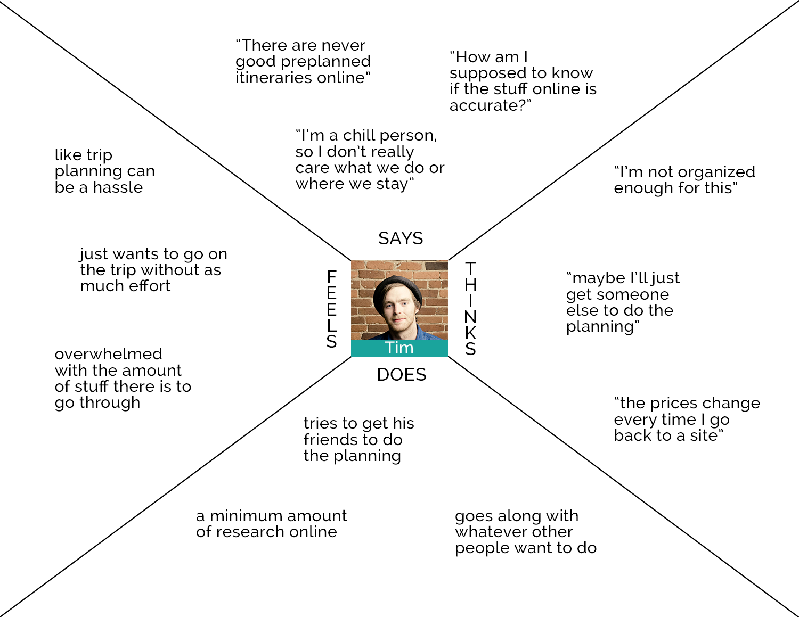
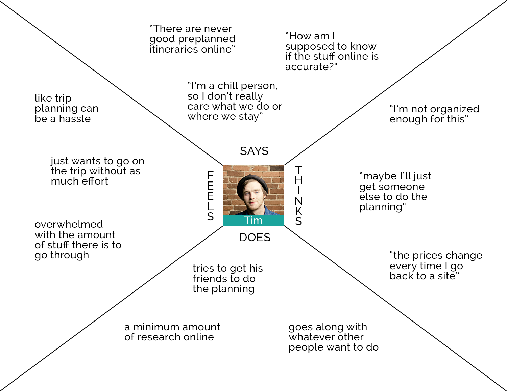
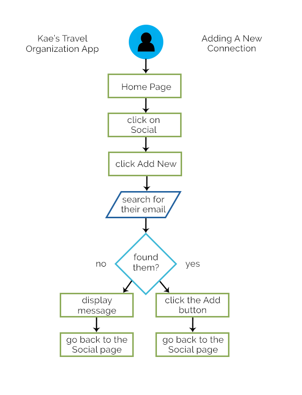
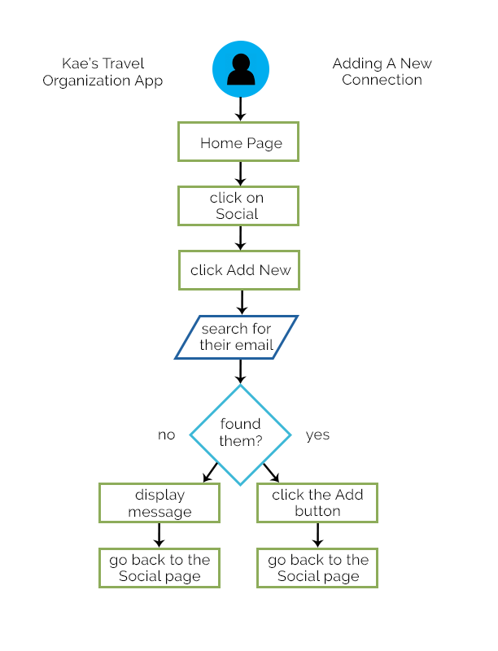

Reika: A Travel Organization App
Overview: What is this?
This is my capstone project for the Springboard UX bootcamp. It isn't going to be a real app (unless you want to make it into one!).
I'm on a quest to design an app that makes it easier to stay organized when you're planning a trip. It's still in progress, so if you're here to see screenshots of the final product then they don't exist yet (sorry!). Check back in a few weeks to see more.
Early Research and Findings: Do other people have issues with trip planning?
Does anyone else have this problem?
I started this process knowing that I’d like a better way to keep track of all of my trip information. I want an app that lets me do trip planning from the vague “Top 10 Things To Do In ______” Pinterest posts all the way to the specifics of actually being on the trip. My early research focused on whether this is something other people also want.
Survey
I made a survey on Typeform to gather general trip planning information. You can view the questions I asked on this Google doc or see the survey on Typeform.
I want a wide range of people to be able to use this app, so I checked with my mentor on how important it is to include demographic questions in an early survey. With her advice I decided to only include one demographic question (age range) and a question about how many trips the respondent takes per year on average. This was partially to start responders off with easier questions, and partially so I had some context for the answers.
The rest of the questions were split between radio buttons, checkboxes, and open-ended questions that asked about habits and processes.
The survey was helpful because it gave me lots of information about how people plan trips and what their challenges are.
- A lot of things about the trip planning process are less than ideal, so there are a lot of opportunities to make improvements. One of my survey questions asked about general trip planning challenges and the responses ranged from long immigration lines to the reliability of reviews.
- Most respondents do at least some trip planning in advance (“some” in the survey meant having their transportation, lodging, and several things to do planned in advance).
- Information overload is an issue, both in the context of figuring out where to look for the best flights/hotels and also in keeping track of the information once they’ve booked their trip.
- Respondents find it challenging to plan if they’re traveling with groups (this wasn’t something I had specifically asked about - several people included it in their open responses).


Interviews
After doing the survey and getting some general information I wanted to ask some follow up questions to get more in-depth so I could make sure what I thought I was hearing were accurate.
I also used it as an opportunity to learn about how how people deal with group travel, since that hadn’t been on my radar before getting survey responses.
I want a range of people to be able to use this, so I chose respondents in a variety of ages and number of trips they go on.
Direction After Early Research
The answer to my original question “Does anyone else have this problem?” is yes, so I know that’s a place to start, but I also learned that most people don’t want to keep track of everything from the beginning of trip planning. Most respondents said they only want the information they’ll actually need on the trip.
Responses to an open-ended question about trip planning challenges included things like:
and
“Keeping all of the information organized. Especially if its a trip with multiple people and we booked separate flights. Sometimes we have taken turns booking accommodation so the confirmations are with different people - Survey Respondent #13
My original hypothesis was to have this app be sort of a Google Drive type place for saving your own trip information, but after talking with potential users it sounds like having a social aspect could be helpful.
If people can connect their plans to their friend’s plans it would make it easier to plan a group trip and keep track of everyone’s information.
In the interviews I asked how people currently keep track of group trips and it sounds like Google Docs is the most common place:
and
“My last group trip we had a google doc where everyone contributed information and things they wanted to do and see. Usually, when we are in the country we have a group chat happening on messenger. We all send links to restaurants and sights/activities (from google maps) and everyone decides together which ones look best. - Interviewee #4
Another thing I asked people about in the interviews was whether they brought a laptop on trips and whether they got some kind of data plan for international travel. I wanted to see if this was something people would want as a website (because all of them said they do at least of their trip planning on a laptop or desktop). The general consensus was that they sometimes bring a laptop depending on the length of the trip and where they're going/staying. Four out of five said they've had a data plan on international trips, but that they don't always get one due to the extra cost.
All five of the interview participants said they bring their phone on trips, so it makes the most sense to have this be an app that can store information without them needing to be online to use it.
TL;DR - I had 29 people complete a survey and I did 5 interviews to get more information. The maim thing I learned is that people are overwhelmed with the amount of things there are to keep track of when they're planning a trip. For this project I’m focusing on creating an app to organize trip documentation and information, and share it easily with the people you're traveling with.
Competitive Analysis: What’s everybody else doing?
I did a competitive analysis of three sites using some of the heuristics in Nielsen’s 10 Usability Heuristics.
I chose to focus on these three heuristics:
- Recognition rather than recall (because there are a lot of different categories to keep track of when traveling)
- Aesthetic and minimalist design (to keep things organized and easy to find)
- Help and documentation (help where you need it can prevent frustration)
Here are the sites I looked at and my observations:
+ Trello’s Website (trello.com) - I chose this because it simplifies organizing a lot of info
- There are some useful options like “Add a card” at the bottom of each board to simplify things, and there are links at the top that stay there when you switch boards.
- Having cards and boards make progressive disclosure easy, so you don’t see all the information until you click on something and ask for it, and there’s a “show menu” on the right side to let you do update the boards settings.
- The help section is hidden. I found two ways to get to it: the first is that you click on the Information icon at the top, then click on More at the bottom, and then click on Help, which opens up a tab for a different site (help.trello.com), and the second is to click on your profile icon and then Help is listed as an option. As far as I can tell there isn’t an easier way to get to the Help site, and there aren’t directions or question mark icons anywhere in the boards.
+ Google Trips App (get.google.com/trips/)- I chose this because it’s a travel planning app made by a company that has a focus on usability
- It seems like a lot of things are hidden within other things (or you have to click on a three dot menu), so it isn’t showing all of the options at once
- In typical Google style it does the aesthetic and minimalist design really well. They’ve clearly focused on progressive disclosure and separate information into categories (Reservations, Things to do, Day plans, etc.).
- There’s a Help option under the hamburger menu, so it’s easy to access, but I think they’ve laid out the app well enough that most things are clear without needing help.
+ Lonely Planet (lonelyplanet.com)- I chose this because it’s a site many people use for trip planning
- The site has a main menu at the top that doesn’t change, and has dropdown menus when you hover over them.
- This site is focused on aesthetics and has a lot of beautiful pictures and white space that make it easy to look at. Since the nav has most items in dropdown menus it looks really clean.
- Help and documentation are under the Contact Us link at the bottom, but there isn’t anything that specifically says Help, and there aren’t icons anywhere. Since this site is mostly blog articles having more specific Help information might not be necessary. In the Shop section there’s a link near the top for Shopping Help and FAQs.
TL;DR - I reviewed three sites that are related to my project’s mission to see how they handled heuristics.
Empathy Maps and Personas: Who is this for?
After my early research I was ready to begin consolidating everything I’d learned and figure out who this project’s target audience is.
I know personas can be controversial, but they’re helpful for me because I naturally come up with a lot of “what ifs” and edge cases when I’m working on a project. Having specific personas makes it harder for me to add something “just in case” because I have to decide whether one of my personas would actually use it.
This (hopefully) keeps me from adding unnecessary things into what I create, and makes the interface simpler than it would be if I was allowed to run free!
People of all different age ranges, backgrounds, and tech levels use the internet to plan trips, and I’d like this app to be accessible to a wide audience. My survey responses came from a wide range of ages (under 20 to 60s), and 68% of the people who responded take between 1 and 4 trips a year, so I wanted to focus on different age groups, and have both of the trip amounts be within the 1-4 range. I also wanted to have one persona who likes to plan and one who doesn't. That way I'll design with enough simplicity that a person who isn't very organized can still use it, and I'll add enough options to keep a person who likes to plan happy.
I made two personas: Tim, a young extravert who likes to travel with friends, and Mary, an organized professional in her 40s who splits her vacations between solo trips and trips with her boyfriend.


 

TL;DR - I have two personas that I’ll be using to guide the design process.
User Stories: How will people use this?
After making the personas I had an idea of what kinds of people would be using this, so then it was time to figure out how they’d use it.
I went through the process of figuring out what the Minimum Viable Product (MVP)/Earliest Testable Product (ETP) and wrote users stories based on that. The MVP/ETP for this is a simple place for users to store trip information. I also added user stories for the user to connect with other people’s accounts. In a real world situation that might be a second round/stretch goal addition.
My first user stories were in the typical “As a user I want to ________ so I can _______”.
See the PDF version of those user stories (opens in a new tab)
After I’d finished them I read a Joe Natoli article on UXPin about shifting user stories to include more information that adds intent behind what they want to do. It’s useful because it shows what success means in the context.
I decided to rewrite my user stories in this type of format to add some reasoning behind why a user would make the decision to use this product. I used my personas and walked through how they would use the app.
See the PDF version of the updated user stories here (opens in a new tab)
TL;DR - I made two types of user stories.
Information Architecture: How should this be laid out?
My next step was to find out how people expect this app to function, so I did a card sort using Optimal Workshop's Optimal Sort.
I asked participants to sort 21 cards into groups that they named themselves. I had 9 people complete the card sort.

The responses to this were really interesting. People could create their own groups for the cards, so that gave them freedom to sort the cards however it made sense to them.
- Account/Profile - (#15, #17, #18) These responses were pretty straightforward and almost all the participants labeled and sorted them in a similar way. Some people separated out Settings and others combined them with the Account/Profile cards.
- Social - I included two cards that referenced connecting with friends on the app (#16 and #21) which were pretty consistent about being under Social/Sharing headings. I also had one card that could be about a friend in real life or on the app (#2), so it looked like people put that in different groups based on their interpretation.
- Trip related - The trip related cards were sorted in different ways. Some people sorted them based on the actions being taken (Add New, Edit), and others sorted them based on what type of thing was being updated (Transportation, Activity, Lodging). A few people put a lot of the trip cards into one big Manage Trips/Trip Details category.
TL;DR - I did a card sort to find out how people expect this app to be organized.
User Flows: How will people use this?
After the card sort and IA were done I wanted to do user flows so I could get a feel for how people would do things within the app. I went through a few flows and used my personas as examples of people who needed to do specific things.


 

This process was fun because it made me focus on what a person would actually be doing, and it made this feel real, rather than hypothetical like it did before. This was the point where I could start to see things coming together. It also made it so I could get specific feedback on how things were going to work.
I was glad I hadn't tried to tackle all of people's travel issues in one app, because those userflows would have gotten pretty complicated. There are still lots of options and things to consider in this app, but since it has one main purpose it's easier to see how people would do a task.